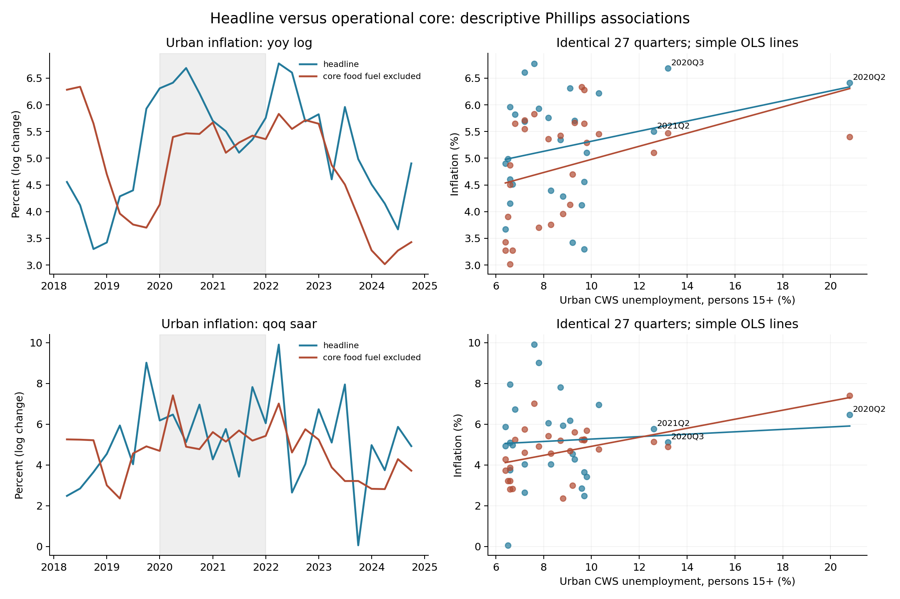
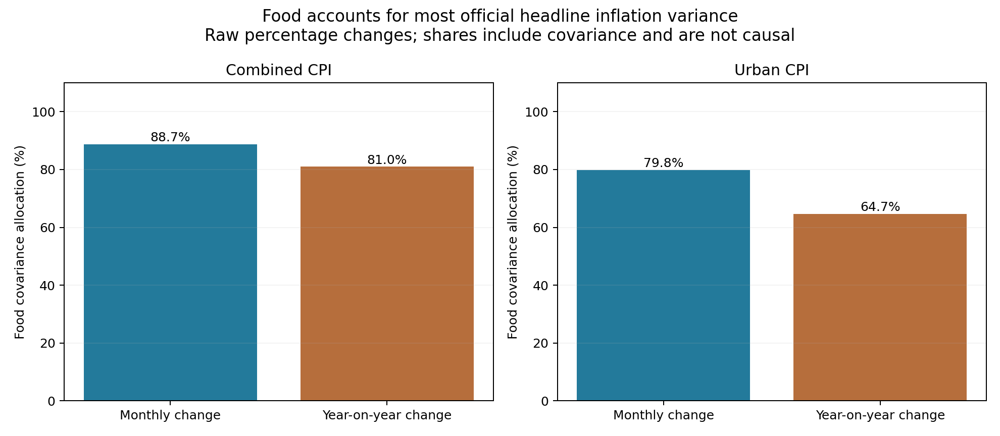

HS455 · Research checkpoint · 21 November 2026 · Base 2012 CPI / old-design PLFS
This is an evidence record and file guide. It is not the 3,000–4,000-word coursework report. Original checkpoint files remain preserved; new work lives in stage7/.
Matched Urban CWS unemployment, persons aged 15+, and Urban CPI: 2018Q2–2024Q4. Simple OLS with intercept. Operational core excludes Food & Beverages and Fuel & Light. Slopes are inflation percentage points per one percentage point of unemployment; q/q rates are annualised. The difference comes from a paired core-minus-headline regression on identical rows.
| Inflation | Sample | N | Headline slope | Core slope | Core − headline | HC3 low | HC3 high |
|---|---|---|---|---|---|---|---|
| q/q SAAR | Exclude 3 pandemic quarters | 24 | -0.1134 | 0.3208 | 0.4342 | -0.3619 | 1.2303 |
| q/q SAAR | Full sample | 27 | 0.0593 | 0.2217 | 0.1624 | -0.0479 | 0.3728 |
| YoY log | Exclude 3 pandemic quarters | 24 | -0.0604 | 0.4202 | 0.4806 | 0.0736 | 0.8877 |
| YoY log | Full sample | 27 | 0.0943 | 0.1228 | 0.0285 | -0.2797 | 0.3366 |
Both primary core slopes are positive. This fails the proposed negative-sign/strengthening pattern. Nominal HC3 intervals are sensitivity summaries: the 27-quarter design has extreme pandemic leverage, and the replicated null simulations show poor calibration for persistent/overlapping errors. This is not evidence that a structural Phillips curve is absent.

Fixed exclusion: 2020Q2, 2020Q3, 2021Q2. Additional checks include food-only exclusion, no-Housing core, full 2020–21 removal, calendar trend, leave-one-quarter-out, STL windows 7/13/25, shorter history and history ending in 2024. Positive core signs survive the composition/history/leave-one checks. National Urban association is distinct from a causal slope or unemployment-gap model.
All primary/sample/composition/trend results · Seasonal history checks · Influence checks
Full index history January 2013–December 2025. Monthly changes have 155 observations; year-on-year changes have 144. These are exact simple-percentage-change covariance allocations, including an explicit aggregation residual. They include covariance with other groups; they are not causal shock shares or basket weights.
| Sector | Measure | N | Food allocation (%) |
|---|---|---|---|
| Combined | Monthly change | 155 | 88.7090 |
| Combined | Year-on-year change | 144 | 80.9568 |
| Urban | Monthly change | 155 | 79.8459 |
| Urban | Year-on-year change | 144 | 64.6857 |

The inherited 90.59% is reproduced for a reconstructed seasonally adjusted aggregate. It is not a universal official-headline share. Independently adjusting General and all groups produces a large seasonal-reconciliation residual (24.24% Combined, 25.09% Urban); those direct-SA allocations are retained as a caveated appendix sensitivity.
For Combined raw monthly inflation, descriptive 12-month moving-block bounds are 85.94–93.14%; for overlapping YoY, 70.48–98.98%. These resampling intervals are not guaranteed confidence coverage. The point shares remain sample dependent.
All exact allocations and sample checks · Block-length uncertainty · Reproduced legacy bridge
Primary continuous monthly models, October 2013–December 2025, n=147, own lag 1 and three delayed food lags. HC3 delayed-sum intervals:
| Outcome | Delayed sum | HC3 low | HC3 high |
|---|---|---|---|
| Food → non-food | -0.0035 | -0.0592 | 0.0523 |
| Food → core | -0.0188 | -0.0690 | 0.0313 |
| Outcome | Joint draws | Joint tail probability | Monte Carlo SE | Same-month tail probability |
|---|---|---|---|---|
| Food → non-food | 19999 | 0.4361 | 0.0035 | 0.0628 |
| Food → core | 19999 | 0.4661 | 0.0035 | 0.1947 |
Joint tests use 19,999 draws; same-month tests use 49,999. Seeds differ by model. The data do not detect a positive delayed association, but do not establish zero spillover. In the non-food recursive AR/GARCH power exercise, a delayed sum of 0.048 is detected in only 5.4% of 1,000 datasets. The RBI January 2024 ARDL study reports a 0.048 short-run sum for a different estimand and sample; our delayed-only estimate is not a replication of it.
The independent recursive simulations use 1,000 datasets per scenario and 999 inner draws. Core bootstrap null rejection reaches 7.1% in one design, so the test is not certified as exact. Reverse predictability and the relative-price addition remain exploratory, with multiplicity and omitted common drivers disclosed.
Calibration, power, coverage and Monte Carlo uncertainty · All 20 historical variants reproduced · Post-results reverse sensitivity
The RBI 2017 state analysis uses output gaps rather than the matched unemployment measure used here. The RBI 2026 volatility study concerns vegetable-driven volatility, a different estimand from delayed mean inflation predictability. Neither is contradicted solely by these descriptive results.
Offline reproduction: python stage7/run_research.py from the package root. Add --full to rerun the long bootstrap and simulation work. See stage7/requirements.txt. This checkpoint was AI-assisted and self-audited; no independent human certification is claimed.